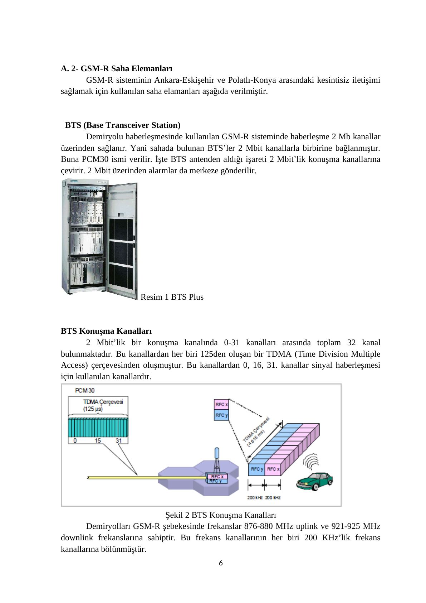
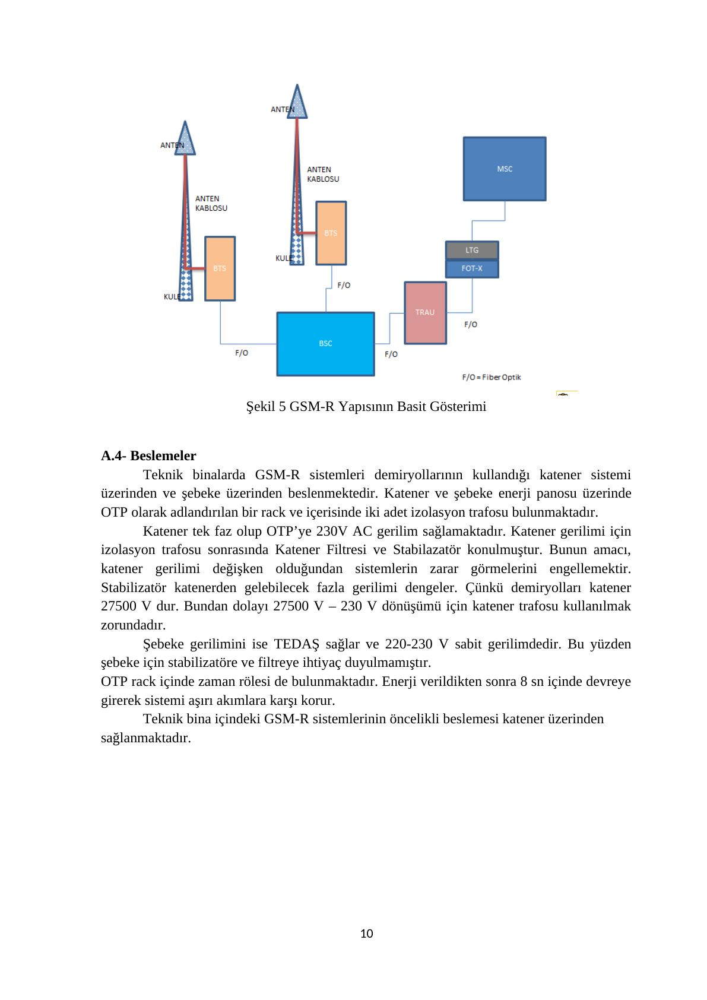
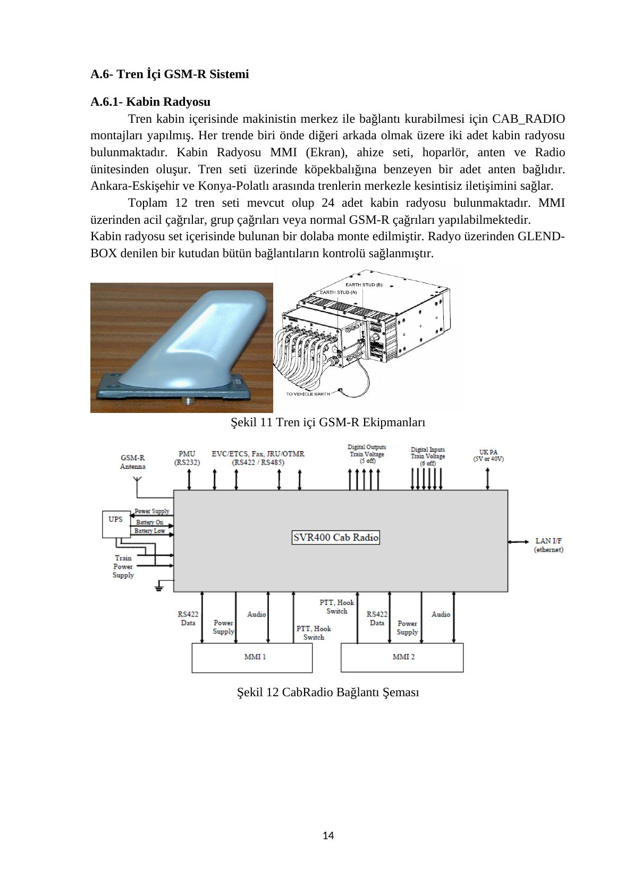
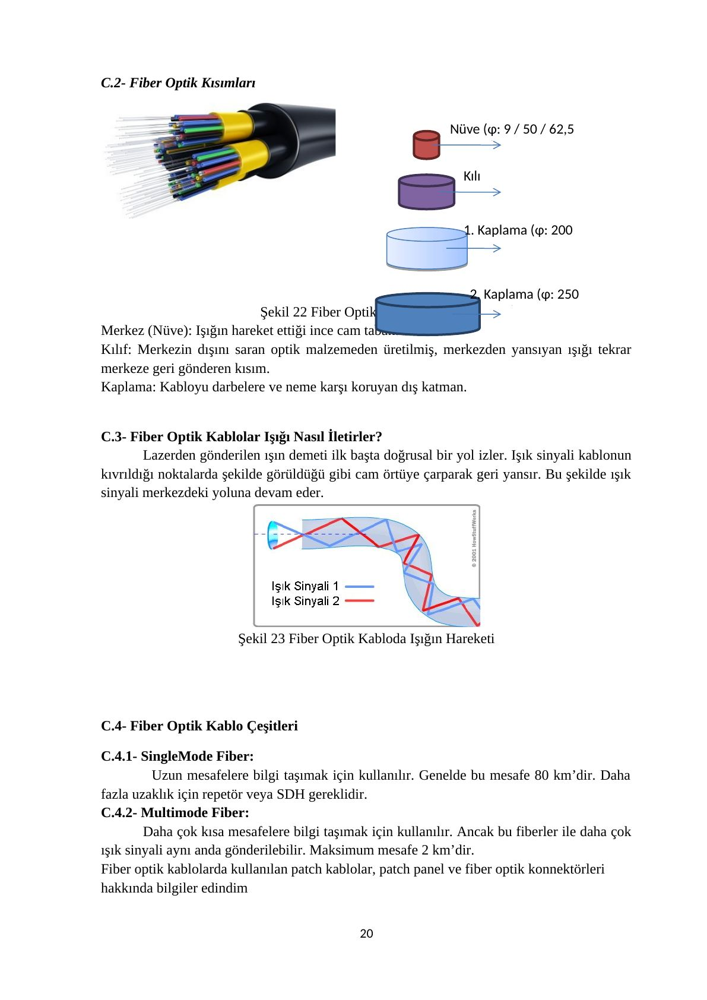
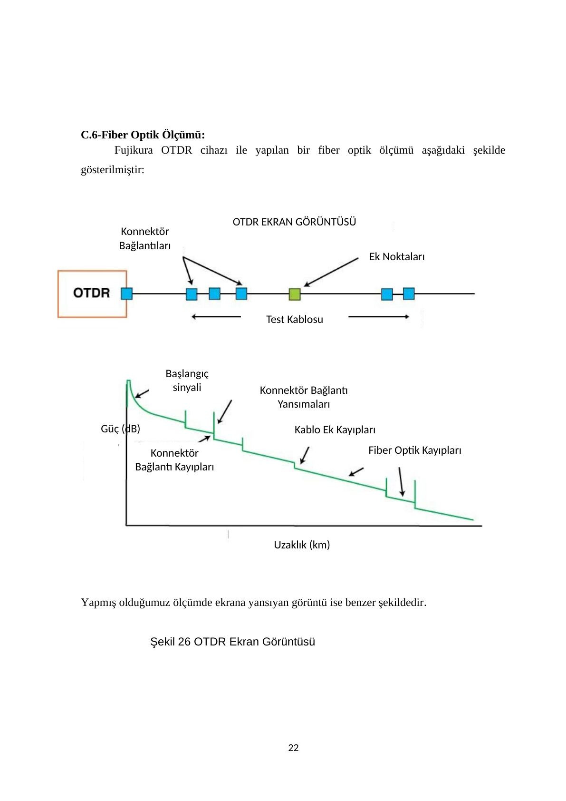

· STAJ
STAJ Yaz Stajı: TCDD YHT Bölge Müdürlüğü EEM400 staj raporu (GSM-R, SDH ve fiber optik, 2014)
STAJ – Yaz Stajı · 08.10.2014 · 14.11.2026
Bu yazı, Başkent Üniversitesi Elektrik-Elektronik Mühendisliği EEM400 stajı için TCDD YHT Bölge Müdürlüğü'nde (Gar/Ulus, Ankara; 18 Ağustos – 12 Eylül 2014) yapılan stajın raporudur. Raporu bir arkadaş hazırlamış (Ekim 2014); öğrenci adı, numarası, adres ve telefon bilgileri çıkarıldı. Rapor, Telekomünikasyon biriminde GSM-R sistemi, sayısal iletim (SDH) ve fiber optik üzerine yapılan çalışmaları anlatır. Aynı birimin daha kapsamlı 70 sayfalık raporu için GSM-R, SDH ve Fiber Optik yazısına bakabilirsiniz. Rapor 23 sayfa; yazının sonunda PDF olarak indirilebilir (ek bölümündeki örgüt şeması sayfaları kişi fotoğrafları ve adları içerdiği için PDF'e alınmadı).
Bölüm 1: Kuruluşun genel tanıtımı
1.1- Staj yapılan kuruluş ile ilgili bilgiler:
TCDD YHT Bölge Müdürlüğü Talatpaşa Bulvarı 06330 Gar/Ulus/ANKARA
1.1.2- Kuruluşun gelişimi ve tarihçesi:
Zamanın en etkin biçimde kullanılması ihtiyacı, karayolu ulaşım araçlarının çevreye verdiği zararların en aza indirilmesi ve diğer taşıma modlarına göre demiryolunun daha güvenilir bir ulaşım aracı olması, demiryolu konusunda gelişmiş bazı Dünya ve Avrupa ülkelerini hızlı tren hatlarının yapımı konusunda önemli yatırımlar yapmaya zorlamıştır. 2003 yılından itibaren hükümetlerimizin demiryollarını yeniden devlet politikası haline getirmeleri sayesinde, demiryolu ile yolcu taşımacılığının en önemli bölümünü teşkil eden Ankara-İstanbul hattında yapılan seyahat süresinin kısaltılmasını, kaçınılmaz bir şekilde gündeme getirmiştir. Ankara, Eskişehir, İstanbul, Konya, İzmir, Sivas, Bursa gibi yolcu potansiyeli ve nüfus açısından ülkemizin büyük kentlerini birbirlerine bağlayacak olan koridorlarda hızlı tren hatlarının yapılması için çalışma başlatılmıştır. TCDD 2003 yılında Ankara-Eskişehir illeri arasındaki hızlı tren ray hattının yapımını başlatmıştır. 23 Nisan 2007 tarihinde deneme seferlerine başlanmış, 13 Mart 2009 tarihinde de ilk yolcu seferi yapılmıştır. 245 km'lik Ankara-Eskişehir hattı yolculuk süresini 1 saat 25 dakikaya düşürmüştür. Bu hat aynı zamanda Ankara İstanbul Hızlı Tren Hattı’nın ilk etabını oluşturuyor. Hattın Eskişehir-İstanbul Hızlı Tren Hattı ve Marmaray’ın tamamlanmasıyla Avrupa Asya arasında ilk günlük hızlı tren seferi yapan hat olacaktır.Temeli 8 Temmuz 2006'da atılan Ankara-Konya Hızlı Tren Hattı’nın 24 Ağustos 2011 tarihinde ilk yolcu seferi yapıldı. Toplam 306 km'lik hattın 94 km'lik Ankara-Polatlı arasındaki kısmı, AnkaraEskişehir projesi kapsamında yapılmıştır. Hat 300 km/saat hıza uygun hat inşa edilmiştir.
1.1.3- Kuruluşun bağlı olduğu üst kuruluş ve mevcut tesisleri:
TCDD bünyesinde varlığını sürdüren YHT Bölge Müdürlüğü, Ulaştırma Bakanlığı çatısı altında faaliyet gösteren Kamu İktisadi Teşebbüsüdür.
1.1.4 – Kuruluş çalışanlarının sayısı
TCDD bünyesinde 26184 Personel görev yapmaktadır.TCDD bünyesinde 21 adet Daire Başkanlığı bulunmaktadır. YHT Bölge Müdürlüğü Hızlı Tren hatlarının işletmeciliğini yapan bir birim olarak çalışmaktadır. Toplam 17 adet birimden oluşmaktadır. Her birimde 1 müh. 1 tekniker ve Tes. Müd. Toplam 12 mühendis görev yapmaktadır.
1.1.5- Kuruluş statüsü ve sermaye yapısı:
TCDD; Tüzel Kişiliğe sahip, faaliyetlerinden özerk ve sorumluluğu sermayesiyle sınırlı bir Kamu İktisadi Kuruluşu'dur. Kuruluşun sermayesi 500 Milyar TL olup, tamamı devlete aittir. Kuruluşun sermayesi, ilgili bakanlığın teklifi üzerine Koordinasyon Kurulu kararı ile değiştirilir.
1.1.6- Kuruluşun faaliyet alanları:
Kuruluşun temel amaçları ve faaliyet alanları; konvansiyonel, hızlı ve yüksek hızlı yeni demiryolları inşaa etmek, devletçe kendisine verilen demiryollarını, işletmek, genişletmek, yenilemek, bunları tamamlayıcı faaliyetlerde bulunmak, Kanun, Tüzük, Yönetmelik, Kalkınma Planı ve yıllık programlar çerçevesinde müesseselerini, bağlı ortaklıklarını ve iştiraklerini yönlendirmek ve bunlar arasındaki koordinasyon ve işbirliğini sağlamaktır.
1.2 – Kuruluşun Genel Örgüt Şeması:
Kuruluşun Genel Örgüt Şeması EK-1’de belirtilmiştir.
1.3- Kuruluşun Üretim ve Çalışma Yöntemleri:
YHT Bölge Müdürlüğü’nde üretim veya montaj çalışması yapılmamaktadır. Kuruluş var olan sistemlerin takibi ve işletmesi üzerine çalışmaktadır.
1.4- Satış Sonrası Destek ve Diğer Müşteri Hizmetleri:
YHT bünyesinde üretim ya da satış gerçekleştirilmediğinden, satış sonrası destek ve müşteri hizmetleri gibi çalışmalar yapılmamaktadır.
1.5- Kuruluşun ARGE Çalışmaları:
TCDD bünyesinde,Yerli Sinyalizasyon ve Milli Tren projeleri kapsamında ARGE çalışmaları bulunmaktadır
1.6- Yurt Dışı Kuruluşlar ile Ortaklık:
Yurt dışı kuruluşlarla ortaklık yoktur. Uluslararası anlaşmaları vardır. UIC (International Union Of Railways )bunlardan biridir.
1.7- Kuruluşun Sektör İçindeki Konumu ve Gelir Kaynakları:
Türkiye’de YHT kendi alanında çalışma gösteren ve hizmet veren tek kuruluştur ve gelir kaynağı Hazine Müsteşarlığı’dır. Ulaştırma bakanlığı bütçesinden pay almaktadır.
1.8- Kuruluşun Bilgisayar Sistemlerinden Yararlanma Düzeyi:
YHT bünyesinde bilgisayar sistemlerinden; kontrol merkezlerinde trenlerin takibi yol ve geçitlerin izlenmesi, arıza takibi, sinyalizasyon ve haberleşme gibi hemen hemen her alanda faydalanılmaktadır. Bilgisayarlar, ilgili birimler içerisinde ağ yapıları üzerinden bağlantı sağlamaktadır. Scada Fiber Optik Ağ, SDH, DWDM sistemlerine sahip GSM-R 850Mhz Telefon Santrali bulunmaktadır. Son derece modern bir kuruluştur.
Bölüm 2: Staj süresince yapılan çalışmalar
Staj boyunca, YHT bünyesinde Telekomünikasyon biriminde çalıştım .Telekomünikasyon biriminde; GSM-R sistemi, sistemin temel özellikleri ile avantaj ve dezavantajları sistemin saha elemanları,teknik binalar, merkez birimi, arıza-alarm tipleri ve GSM-R sisteminin tren içine uygulanması konularında gerekli teknik bilgileri alarak sistemin işleyişi, takibi, arızaların giderilmesi noktalarında bilgi sahibi oldum. Haberleşme noktasında sayısal iletim bazında SDH ve çoğullama (DWDM) teknolojileri konularında araştırma yapıldı. Ayrıca Fiber Optik Sistem, fiber optik kablolar, kabloların yapısı, çeşitleri, kablolarla ilgili ölçümler ve arızalar ile ilgili uygulamalar yapma şansım oldu.
Çalışma yaptığım konular:
A- GSM-R Sistemi
GSM-R (Global Systemfor Mobile-Railway) sistemi YHT hattı boyunca merkez ile YHT tren setleri arasında haberleşmeyi ve data iletimini sağlayan bir sistemdir. Merkezde tren hareketlerini izleyen dispeçer ile tren makinisti arasında hava ara yüzünü kullanarak yapılan bir haberleşme söz konusudur. Bu sistemle saatte 250 km hızla giden trenlerle merkez haberleşmesinin sağlanabilmesi amaçlanmıştır. Normal GSM sistemlerine ek olarak bir hücreden diğer bir hücreye geçişlerin daha hızlı olduğu bu sistemde yaklaşık 500 km/sa hızlarda bile iletişim kesintisiz olarak yapılabilmektedir. Demiryolu taşımacılığında iletişimin çok önemli olduğunun farkında olan TCDD GSM-R sistemi ile kapalı bir network oluşturarak kendi haberleşmesini sağlamaktadır. GSM-R başarısı kanıtlanmış bir teknolojidir ve şu anda dünya çapında 15’den fazla ülkede uygulanmaktadır.
Seksenli yılların başında Avrupa genelinde işleyen çok sayıda demiryolu iletişim sistemi bulunmaktaydı ve bu da sınır ötesi trafiği yavaşlatmakta ve fiyatını artırmakta idi. Avrupa Birliği içinde artan ekonomik entegrasyon ile tren radyo iletişiminde tek bir standardı benimsemek için GSM sistemlerinin demiryoluna uygulanması düşünülmüştü. Bu nedenle GSM-R “demiryolları için demiryolları tarafından” tasarlanan bir teknolojidir. 250 km/h tren hızında haberleşmenin kesintisiz olarak yapılabilmesini sağlamakla birlikte 500 km/h saat hızı da desteklemektedir. 2011 verilerine göre Avrupa Demiryollarının 221.025 km lik kısmının 150.650 km’sinde GSM-R sistemi kullanılmaktadır.
A.1- Neden GSM-R?
- Birlikte Çalışılabilirlik: Sistem sınırları olmadan demiryolu iletişimini sağlar
- Kesintisiz iletişim sağlanması nedeniyle trenlerin seyahat hızını artırır.
- Kesintisiz yolcu taşıma hizmeti sunarak seyahat süresini kısaltır, konfor ve rahatlığı artırır.
- En aza indirilmiş trenler arası mesafe aracılığı ile track (hat) kapasitesini artırır
A.2- GSM-R Saha Elemanları

GSM-R sisteminin Ankara-Eskişehir ve Polatlı-Konya arasındaki kesintisiz iletişimi sağlamak için kullanılan saha elamanları aşağıda verilmiştir.
BTS (Base Transceiver Station)
Demiryolu haberleşmesinde kullanılan GSM-R sisteminde haberleşme 2 Mb kanallar üzerinden sağlanır. Yani sahada bulunan BTS’ler 2 Mbit kanallarla birbirine bağlanmıştır. Buna PCM30 ismi verilir. İşte BTS antenden aldığı işareti 2 Mbit’lik konuşma kanallarına çevirir. 2 Mbit üzerinden alarmlar da merkeze gönderilir.
Resim 1 BTS Plus
BTS Konuşma Kanalları
2 Mbit’lik bir konuşma kanalında 0-31 kanalları arasında toplam 32 kanal bulunmaktadır. Bu kanallardan her biri 125 µs’den oluşan bir TDMA (Time Division Multiple Access) çerçevesinden oluşmuştur. Bu kanallardan 0, 16, 31. kanallar sinyal haberleşmesi için kullanılan kanallardır.
Şekil 2 BTS Konuşma Kanalları
Demiryolları GSM-R şebekesinde frekanslar 876-880 MHz uplink ve 921-925 MHz downlink frekanslarına sahiptir. Bu frekans kanallarının her biri 200 KHz’lik frekans kanallarına bölünmüştür.
Şekil 3 GSM Frekans Bantları
A.2.1- Teknik Binalar
Demiryollarında hat boyu sistemler için yaklaşık her 10 km de teknik binalar oluşturulmuştur. Bu teknik binalar içinde GSM-R sistemleri de dâhil olmak üzere enerji panoları, sinyal sistemleri bulunmaktadır.
A.2.2- Kuleler
Demiryolları GSM-R sisteminde kullanılan kuleler yerine göre 30m veya 50m den oluşmaktadır. GSM teknolojisinde 900 MHz (Turkcell, Vodafone), 1800 MHz (Avea) ve 1900 MHz (Yalnızca Amerika’da) kullanılmaktadır. GSM-R teknolojisinde de yaklaşık 900 MHz’dir. Teoride, 900 MHz ile çalışan sistemlerde maksimum 35 km’lik bir yarıçapta iletişim sağlamak mümkündür. 1800 MHz ve 1900 MHz ile çalışan sistemlerde ise bu yarıçap 8 km’ye düşmektedir. Demiryolları GSM-R’da 35km yarıçap mümkündür ancak arazinin dağlık kesimleri de ihtiva ettiği düşünüldüğünde bu mesafe düşmektedir. Dolayısıyla GSM-R teknolojisinde kuleler arası mesafe hat boyu kesintisiz kapsama sağlamak amacıyla yaklaşık 10 km’dir. Arazinin durumuna göre 30 veya 50 m boyunda direkler kullanılmıştır. Direklerin tepesinde ise uçak ikaz lambaları kullanılmıştır. Kuleler galvanizli çelik malzemeden yapılmış olup çekme ve kırılma testlerine de tabi tutulmuştur. GSM teknolojisinde 3 ayaklı kuleler olduğu gibi 4 ayaklı olanları en çok tercih edilenleridir. Demiryollarındaki bütün kuleler 4 ayaklı kulelerdir. Kulelerin dikilmesi için taban ayakları 3 m x3 m x 3 m lik beton zemine oturtulmuştur.
Resim 2 GSM-R Kulesi
A.2.3- Antenler

Demiryolları GSM-R teknolojisinde amaç hat boyu kapsama olduğu için genelde her kulede iki sektör olacak şekilde bir anten bağlantısı gerçekleştirilmiştir. Antenlerin frekans aralığı 806-960 MHz 15 dBidir. Her bir anten 120olik bir açı ile hatta yönlendirilmiştir.
Şekil 4 GSM-R Anteni ve Kapsama Açıları
A.2.4- BSC (Base Station Control)
Base Station Control (Ana İstasyon Denetleyici) merkezde bulunmakla birlikte sahada bulunan bütün BTS’leri kendi üzerinde toplar. Bir BSC’ye 128 tane BTS bağlanabilir. Gelen tüm 2 Mbit’lik konuşma kanallarını TRAU denilen kod çeviriciye gönderir. BSC üzerinden bütün saha elemanlarına ulaşabilir ve uzaktan erişimle bir çok işlemi gerçekleştirebilir. Yani BTS sistemin beyni görevindedir.
BSC üzerinde COBA adı verilen ve tüm database’i üzerinde tutan bir kart vardır. Bu kart 0 ve 1 modül olarak yedeklenmiştir. Kartın biri arızaya geçtiğinde diğer kart tüm yükü üzerine alarak kesintisiz çalışmaya devam eder.
BSC üzerinde PEXE denilen çevresel alarmları toplayan ve ekrana yansıtılmasında rol oynayan bir kart vardır. Böylece network üzerinde bir arıza meydana geldiğinde bu kart üzerinden alarm görüntülenir.
A.3-Kod Çevirici Ünite (TRAU)
TRAU (Transcoding and Adaptation Unit) olarak isimlendirilen bu modül BSC ile MSC arasında 2 Mbit konuşma kanallarının şifrelenmesi ve sıkıştırılması ile sorumludur. Ayrıca TRAU BSC ile MSC arasında hız ayarlamasından sorumlu elemandır. TRAU 4 adet 2 Mbit konuşma kanalını bir PCM30 üzerine sıkıştırarak MSC üzerinde bulunan LTG’ye iletir. Bu ara bağlantı fiber optik kablo ile gerçekleştirilir. TRAU’dan çıkan fiber optik kablo FOT-X denilen bir bağlantı aparatı ile LTG (Line Truck Group)’ye girer. FOT-X fiber optikten gelen ışık sinyalini elektriksel sinyale çevirerek ilgili karta aktarır.
Resim 3 GSM-R TRAU
Şekil 5 GSM-R Yapısının Basit Gösterimi
A.4- Beslemeler

Teknik binalarda GSM-R sistemleri demiryollarının kullandığı katener sistemi üzerinden ve şebeke üzerinden beslenmektedir. Katener ve şebeke enerji panosu üzerinde OTP olarak adlandırılan bir rack ve içerisinde iki adet izolasyon trafosu bulunmaktadır. Katener tek faz olup OTP’ye 230V AC gerilim sağlamaktadır. Katener gerilimi için izolasyon trafosu sonrasında Katener Filtresi ve Stabilazatör konulmuştur. Bunun amacı, katener gerilimi değişken olduğundan sistemlerin zarar görmelerini engellemektir. Stabilizatör katenerden gelebilecek fazla gerilimi dengeler. Çünkü demiryolları katener 27500 V dur. Bundan dolayı 27500 V – 230 V dönüşümü için katener trafosu kullanılmak zorundadır.
Şebeke gerilimini ise TEDAŞ sağlar ve 220-230 V sabit gerilimdedir. Bu yüzden şebeke için stabilizatöre ve filtreye ihtiyaç duyulmamıştır.
OTP rack içinde zaman rölesi de bulunmaktadır. Enerji verildikten sonra 8 sn içinde devreye girerek sistemi aşırı akımlara karşı korur.
Teknik bina içindeki GSM-R sistemlerinin öncelikli beslemesi katener üzerinden sağlanmaktadır.
Şekil 6 OTP Panosunun Elektriksel Yapısı
Sistem 48 V DC ile çalışmaktadır. OTP panosundan gelen AC gerilim redresöre gelir. Redresör aküleri besleyen bir sistemdir. Dolayısıyla çıkış DC olmaktadır. Sistemin beslemesi için 60 Ah den oluşan 12 Voltluk 4 adet kurşun asit kuru akü bulunmaktadır. Sistem yaklaşık 20 A çekmektedir.
A.5- Saha Elamanlarına Erişim
A.5.1- LMT (Yerel Bakım Terminali)

Yerel Bakım Terminali BTS veya BSC üzerinden seri port (25DB) bağlantısı yapılabilen bir yönetim terminalidir. Kısacası kullanıcı ara yüzüdür. Bağlantı hızı 4,8 Kbit/s dir. . Bu program ile sistem üzerinde bulunan arızaları görebilir ve sistem üzerinde gerekli yazılımla ilgili değişiklikleri yapabiliriz. Yeni kurulan BTS veya BSC sistemlerini ayağa kaldırmak için bu program kullanılır.
Şekil 7 LMT Programının Giriş Sayfası Görüntüsü
LMT programının giriş ekranı yukarıdaki gibidir. Biz sisteme BSC üzerinden bağlandık. Kullanıcı adı ve şifreyi girdikten sonra sistemin bir görüntüsü ekrana yansıyacaktır. Burada iki görünüm vardır. Grafik veya tree (ağaç) modu.
Bazı ekran görüntüleri aşağıdaki gibidir.
Şekil 8 LMT Programı Görüntüleri
A.5.2- RC (Radio Commander)
RC arkasında büyük bir server olan ve LINUX işletim sistemini kullanan güçlü bir işletim sistemidir. Radio Commander ile bütün bir network aynı anda tek bir ekran üzerinde görülebilir. Arızalı sistemleri arında tespit edebilir, hatta sesli uyarı verebilir. Tüm sahalara aynı anda hükmedilebilir. RC ile BSC ve BTS sistemlerine müdahale edilebilir. Raporlama alınabilir. LMT programına göre daha güçlüdür, ancak devreye alma durumunda LMT kullanılır.
Şekil 9 RC Ana Sayfa Görüntüsü
Şekil 10 GSM-R RC Görüntüsü
A.6- Tren İçi GSM-R Sistemi
A.6.1- Kabin Radyosu

Tren kabin içerisinde makinistin merkez ile bağlantı kurabilmesi için CAB_RADIO montajları yapılmış. Her trende biri önde diğeri arkada olmak üzere iki adet kabin radyosu bulunmaktadır. Kabin Radyosu MMI (Ekran), ahize seti, hoparlör, anten ve Radio ünitesinden oluşur. Tren seti üzerinde köpekbalığına benzeyen bir adet anten bağlıdır. Ankara-Eskişehir ve Konya-Polatlı arasında trenlerin merkezle kesintisiz iletişimini sağlar. Toplam 12 tren seti mevcut olup 24 adet kabin radyosu bulunmaktadır. MMI üzerinden acil çağrılar, grup çağrıları veya normal GSM-R çağrıları yapılabilmektedir. Kabin radyosu set içerisinde bulunan bir dolaba monte edilmiştir. Radyo üzerinden GLENDBOX denilen bir kutudan bütün bağlantıların kontrolü sağlanmıştır.
Şekil 11 Tren içi GSM-R Ekipmanları
Şekil 12 CabRadio Bağlantı Şeması
A.7- Alarmlar
Saha elemanlarından gelen alarmlar RC üzerinden rahatlıkla görülebilir. Herhangi bir sahada arıza meydana geldiğinde ekran üzerinde düşmektedir. Alarm tipleri aşağıda liste halinde verilmiştir.
A.7.1- Alarm Tipleri a. Haberleşme Alarmı Bir haberleşme alarmı; prensip olarak bilgiyi bir noktadan diğerine iletmek için gerek duyulan prosedür ve/veya işlemler ile ilgilidir.
b. Hizmet kalitesi alarmı Hizmet kalitesi alarmı; prensip olarak bir hizmetin kalitesinde meydana gelen düşüş ile ilgilidir.
c. İşlem hata alarmı Bir işlem hata alarmı; prensip olarak yazılım ya da işlem hatası ile ilgilidir. d. Donanım alarmı Bir donanım alarmı; prensip olarak bir donanım hatası ile ilgilidir.
e. Çevresel alarm Bir çevresel alarm; prensip olarak donanımın bulunduğu bir kapalı ortam ile ilgili bir durum ile bağlantılıdır.
Alarmlar şiddetlerine göre kritik, majör ve minör olarak da ayrılmıştır. Alarmlar otomatik olarak veya manuel olarak arıza sonlandığında kaldırılır.
Şekil 13 RC Üzerindeki Alarm Görüntüleri
A.8- Merkez
Merkez santral çok kompleks bir yapıya sahiptir. Merkez MSC ile BSC arasındaki bağlantı TRAU ile yapılmaktadır. TRAU’dan çıkan 2 Mbitlik kanallar fiber optik ile LTG (Line Truck Group) denilen bir rack (çatı diye isimlendiriliyor) grubuna gelir. Buradan ise SSNC (Sub-switching Network Center) ye gelir. Burada anahtarlama yapıldıktan sonra CP (Control Processor)’da bağlantı kurulur. Eğer GPRS (General PacketRadio Service) üzerinden bir data bağlantısı gerçekleştirilecekse, bağlantı BSC üzerindeki Gbarayüzü denilen bir slottan SCSN çatısına bağlantı yapılır. Eğer SMS (Short Message Service) gönderildiğinde ise LTG üzerinde SMSC çatısına bağlantı yapılır.
Aslında merkezde en önemli birim SSNC dir. Çünkü bütün ağ anahtarlamasının gerçekleştirildiği yerdir. Sistem kısa kod aramasına da izin vermektedir. Örneğin 1200 kısa kodu ile Dispeçer merkezini arayabiliyoruz. Aslında 1200 numaralı dispeçer merkezinin arkasında 11 haneli bir numara bulunmaktadır. Bu kısa kod üzerinden mesaj göndermek de mümkündür. Bu aramanın gerçekleştirilmesi için akıllı şebeke IN (Intelligent Network) denilen bir birim mevcuttur. SSNC kısa kod aramasında CP ile bağlantı kurmadan önce kısa kodun IN üzerinde tanımlı olup olmadığını sorar, tanımlı ise IN kısa kodun arkasında yatan 11 haneli numarayı SSNC’ye gönderir. Bundan sonra SSNC ise CP ile bağlantıyı gerçekleştirir.
Bağlantının gerçekleşebilmesi için network’e kayıtlı olmanız gerekmektedir. CP içerisinde HLR (Home LocationRegister) ve VLR (VisitorLocationRegister) denilen birimler mevcuttur. HLR, SIM kart üzerinde bulunan ve 28611xxxxxx ile başlayan ve 18 haneden oluşan numarayı kaydeder. Arama sırasında bu numaranın doğruluğu AC (Authentication Center) denilen doğrulama merkezinde HLR üzerinde bulunup bulunmadığı kontrol edilir. Eğer mevcutsa bağlantı kurulur. VLR ise başka MSC üzerinde bulunan SIM kartların bağlantılarını gerçekleştirir. Ancak demiryollarında tek MSC olduğu için başka MSC’ler (AVEA, TURKCELL, VODAFON) ile bağlantıları yoktur.
Sistemde PBX bağlantılarının gerçekleşebilmesi için sistem ile uyumlu HI-PATH mini bir santral bulunmaktadır. Bu santral üzerinden demiryolları dahili şebeke bağlantıları yapılabilmektedir.
Merkez sistem 110, 112, 155, 156 gibi acil numaraların çağrılarını da yapabilmektedir. Demiryolu hattı üzerinden istenilen bir noktada bu çağrılar gerçekleştirilebilmektedir.
Ayrıca tren trafiği ile ilgili bütün görüşmelerin kayıt altına alındığı NICE olarak isimlendirilen bir server vardır. Burada dispeçer ile makinistler arasındaki bağlantılar kayıt altına alınmaktadır. Windows 2003 server tabanlı bu PC’ler ile kayıtlar en az 6 ay saklanmaktadır.
A.8.1- Merkez Kontrol Odası
Merkezde bütün sistemi kontrol edebilmek için kontrol odası mevcuttur. Burada yedekli olmakla birlikte toplam 9 adet bilgisayar bulunmaktadır. Bunlar Radio Commander, IN, NICE, Switch Commander (2 adet), GPRS Commander (2 adet), TNMS (SDH sistemi için), SPOTS (Görüşme trafiği için) dir.
A.8.2- SC (Switch Commander)
Merkez Kontrol odasında en önemli bilgisayar MSC santralda birçok yetkilerin verilebildiği SC sistemidir. Bu bilgisayar MML komut sistemi ile çalışan ve direkt olarak CP’ye bağlı olan bir bilgisayardır. LTG, CP ve SSNC’yi kontrol edebilir. B- İletişim Sistemleri
B- İletişim Sistemleri
B.1- Sayısal İletim
Bir iletişim sisteminde iki nokta arasında sayısal darbelerin iletimidir. Başlangıçtaki kaynak bilgi sayısal yada analog biçimde olabilir. Kaynak bilgi analogsa iletimden önce sayısal darbelere, alıcıda ise tekrar analog biçimine dönüştürülür. Sayısal iletimin analog iletime göre en önemli avantaj ve dezavantajları şunlardır.
B.1.1- Sayısal İletimin Avantajları
1- Gürültüden etkilenmemesi en önemli avantajıdır. Analog sinyaller, sayısal darbelere oranla arzu edilmeyen genlik, frekans ve faz değişimlerine daha yatkındırlar. Bunun nedeni sayısal iletimde, bu parametreleri analog iletimde olduğu kadar tam ve kesin olarak değerlendirmenin gerekli olmamasıdır.
2- Sayısal darbeler ileme ve çoklama işlemi için analog sinyallerden daha uygundur. Sayısal darbeler kolayca saklanabilir. Ancak analog sinyalleri saklamak kolay değildir. Ayrıca sayısal sistemin iletim hızı değişik ortamlara uyum gösterecek değişik donanımlara arabirim üzerinden bağlanacak şekilde kolayca değiştirilebilir. 3- Hatayı düzeltmenin mümkün olması 4- Entegre devre tekniği ile kolay gerçekleşebilmesi
B.1.2- Sayısal İletimin Dezavantajları:
1- Sayısal olarak kodlanmış analog sinyallerin iletimi, analog sinyallerin oldukları gibi iletmesine oranla daha çok bant genişliği gerektirir.
2- Analog sinyaller iletimden önce sayısal kodlara, alıcıda ise tekrar analog biçimine dönüştürülmelidir.
3- Sayısal iletim, verici ile alıcının saat darbeleri arasında senkronizasyonu gerektirir. 4- Sayısal iletim sistemleri, günümüzde kullanılmakta olan analog sistem donamı ile uyumlu değildir.
B.2-SDH SİSTEMİ
SDH’in Çalışma Prensibi SDH’in bir noktadan diğer bir noktaya bilgi aktarımını bir nakliye işlemine benzeterek açıklayabiliriz. SDH iletiminin, şebekede yaklaşık ışık hızı ile dolaşan tırların taşıdığı çeşitli boylardaki bilgi paketleri ile yapıldığını düşünelim. Tırların büyüklüğü SDH elemanının 155 Mbit/s, 622 Mbit/s ve 10 Gbit/s gibi ana hat hızında çalıştığını belirtir. Servis işaretleri ses, veri ve video olabilir. Servis işaretleri gönderilecek olan SDH elemanı tarafından özel bir şekilde paketlenir ve tırlar üzerine yüklenir. Tır diğer SDH elemanına ulaştığında sadece bu pakete ulaşır ve indirilir. Yerine konacak başka bir paket varsa boşaltılan yere yerleştirilir. Her bir SDH elemanının TIR üzerinde yükünü alacağı ve yükleme yapacağı yerler önceden belirlenir ve şebeke üzerinde bu şekildeki bilgi iletimi ekle/çıkar olarak adlandırılır. SDH elemanları kendilerine air sanal kapların Tır içindeki yerini bilir ve doğrudan bu paketlere ulaşarak bilgilerinin alırlar.
B.2.1- SDH’in Avantajları
- 140 Mbit/s’nin üzerindeki bit hızları ilk kez uluslararası olarak standartlaştırılmıştır. 2. Optik işaretim hat üzerinden iletimine ait kod standartlaştırılmıştır. Bu nedenle farklı üreticilerin hat donanımları ile uyumludur. Böylece üreticiler tek bir dünya pazrı için daha ucuza sistem üretebilirler.
3. Modüler yapı, çoklama bit hızları temel bit hızın tam katları olarak üretilir. Çoklama işaretlerinin çerçeve yapısı temel işaretin çerçeve yapısı ile özdeştir. Bu da hiçbir yeni çerçevenin tanımlanması gerekmediği anlamına gelir.
4. Çoklama işaretindeki tek bir kanala erişim gösterge verilerinin değerlendirilmesi ile olanaklıdır. Yalnızca istenen kanalların ayrılması gerektiğinden, bu yöntem çapraz bağlama sistemleri ile dallanmada avantajdır.
5. Şebeke kaynakları tek bir master saate senkronizedir.
6. Güçlü ağ yönetimi imkanı sağlar. Bu esneklik ve yüksek güvenirlik demektir. 7. Ana hat ve şebeke elemanı arızalarına karşı koruma ve yedekleme mümkündür. 8. Gelecekte düşünülen geniş bant işaretlerinin iletimi olanaklıdır.
9. Elektrik işaretinin bir optik işarete karmaşık hat kodlaması olmadan dönüşümü olanaklıdır. Bir hata izlemesi, çeşitli iletim bölümlerinde tam eşlik gözetimi yoluyla gerçekleştirilir.
B.2.2- SDH’in Dezavantajları
Bağımlı işaret ile başlıktaki hat arasındaki ilişkinin kaydedilmesi gerektiğinden dolayı karmaşık ve özenli bir tekniktir.
SDH’in Amerikan kökeninden dolayı CEPT hiyerarşisi işaretlerinin iletimi ile ilgili bazo yetersizlikler devam etmektedir. Örneğin, kapasitesinin 4x34 Mbit/s’lik işaretin iletilmesine olanak vermesine rağmen STM-1’de yalnızca 3x34 Mbit/s’lik bir veri iletilebilmektedir. C- Fiber Optik Sistem
C- Fiber Optik Sistem
C.1- Fiber Optik Sistem
Fiber optik, insanın saç teli kalınlığında ve çok hassas üretilmiş saf bir cam ip üzerinden ışığın iletilmesi prensibiyle çalışan bir sistemdir. Bu şekilde üretilmiş kabloların tercih edilmesinin en büyük sebebi, çevresel şartların çok ağır olduğu; nemli, rutubetli, elektriksel alan parazitlerinin yoğun olduğu yerlerden etkilenmemesi ve her zaman stabil bir bağlantı sunmasıdır. Fiber optik kablolar, iletimi ışık hızıyla saniyede 300 bin km’lik hızla gerçekleştirirler. Bu yönleri sebebiyle uzak mesafelere veri aktarımı için tasarlanmışlardır. Elektronik haberleşme temelde elektronların yer değiştirmesiyle gerçekleştirilir. Dolayısıyla kullanılan iletkenin türü, yapısı ve boyutları vb. etkenler iletişim hızını etkilemektedir. Araştırmalar neticesinde, ses ve elektrikten sonra ışık da iletişim için kullanılmaya başlanmıştır. Işıkla bilgi transferi için fiber optik elyaf geliştirilmiştir. Fiber optik aracılığıyla bilgi taşıyan sistemlere fiber optik sistemler denir.
C.1.1- Fiber Optik Kablonun Avantajları
- Geniş bant aralığı
- Düşük kayıp
- Elektromanyetik bağışıklık
- Güvenilirlik
- Hafiflik
- Küçük boyut
- Radyoaktif ışınımlara karşı dayanıklılık
- Bilgi sızdırmazlık
- Topraklama problemi yoktur
- Esneklik
C.1.2- Fiber Optik Kablonun Dezavantajarı
- Uç uca eklemek kolay değildir.
- Ek bakım titizliği ister.
- Ekonomik olarak biraz pahalıdır.
C.2- Fiber Optik Kısımları

Nüve (φ: 9 / 50 / 62,5 mikron) Kılı f
- Kaplama (φ: 200 mikron)
2. Kaplama (φ: 250
Şekil 22 Fiber Optik Kablo ve Yapısımikron)
Merkez (Nüve): Işığın hareket ettiği ince cam tabaka.
Kılıf: Merkezin dışını saran optik malzemeden üretilmiş, merkezden yansıyan ışığı tekrar merkeze geri gönderen kısım.
Kaplama: Kabloyu darbelere ve neme karşı koruyan dış katman.
C.3- Fiber Optik Kablolar Işığı Nasıl İletirler?
Lazerden gönderilen ışın demeti ilk başta doğrusal bir yol izler. Işık sinyali kablonun kıvrıldığı noktalarda şekilde görüldüğü gibi cam örtüye çarparak geri yansır. Bu şekilde ışık sinyali merkezdeki yoluna devam eder.
Şekil 23 Fiber Optik Kabloda Işığın Hareketi
C.4- Fiber Optik Kablo Çeşitleri
C.4.1- SingleMode Fiber:
Uzun mesafelere bilgi taşımak için kullanılır. Genelde bu mesafe 80 km’dir. Daha fazla uzaklık için repetör veya SDH gereklidir.
C.4.2- Multimode Fiber:
Daha çok kısa mesafelere bilgi taşımak için kullanılır. Ancak bu fiberler ile daha çok ışık sinyali aynı anda gönderilebilir. Maksimum mesafe 2 km’dir.
Fiber optik kablolarda kullanılan patch kablolar, patch panel ve fiber optik konnektörleri hakkında bilgiler edindim
C.5- Fujikura OTDR Cihazı
Demiryollarında kullanılan Fujikura OTDR cihazı fiber optik kablonun ölçümü için kullanılmaktadır.
Resim 5 Fujikura OTDR Cihazı
Bu cihaz ile yapılabilen uygulamalar;
- Hata bulma
- Güç seviyesi testleri
- Optik spektrum analiz testleri
- Zayıflama profil testleri
- Kromatik dispersiyon testleri
- Sinyal kaybı ve Optik sinyal geri dönüş kaybı testleri Cihaz küçük ve taşınabilir olduğundan çok esnektir. Ayrıca kullanımı da kolaydır.
C.6-Fiber Optik Ölçümü:

Fujikura OTDR cihazı ile yapılan bir fiber optik ölçümü aşağıdaki şekilde gösterilmiştir:
Konnektör Bağlantıları OTDR EKRAN GÖRÜNTÜSÜ Ek Noktaları Test Kablosu Başlangıç sinyali Güç (dB) Konnektör Bağlantı Yansımaları Kablo Ek Kayıpları Fiber Optik Kayıpları Konnektör Bağlantı Kayıpları Uzaklık (km) Yapmış olduğumuz ölçümde ekrana yansıyan görüntü ise benzer şekildedir.
Şekil 26 OTDR Ekran Görüntüsü
Bölüm 3: Stajda sağlanan yararlar
EEM400 stajımda YHT bünyesinde kurulu sistemin; takibi,sağlıklı şekilde çalışması, olası arızaların tespiti ve onarılması konularında çalışmalar yaptım.Trenlerin geçtiği noktalarda izlemelerin nasıl yapıldığı, tren ve içerisindeki yolcuların en güvenli ve hızlı şekilde ulaşım hizmetlerinden nasıl yararlandıkları noktasında gözlemler yaptım.YHT gibi karmaşık ve zor bir sistemin, işlevlerine göre nasıl birimlerine ayrıldığını ve bu birimlerin çalışma alanlarını gözlemledim.Devlet kuruluşunda ast-üst ilişkilerinin nasıl işlediği konusunda gözlemler yapma şansı yakaladım. Stajımı yaptığım Telekomünikasyon biriminde arıza durumlarında, arızayı gidermek için araziye arıza noktasına giden bir ekip bulunuyordu,Sincan-Kayaş hattı gibi merkeze yakın olan hatlara bu ekiple birlikte giderek anten ve kule gibi saha elemanlarını yerinde görme şansı yakaladım.Arızalara nasıl müdahale edildiğini gözlemledim.
Birimde bizden sorumlu mühendis aracılığı ile sayısal iletim (SDH) ve çoğullama (DWDM) teknolojileri hakkında bilgiler aldım ve bu konular üzerinde araştırmalar yaparak haberleşme teknolojileri hakkında fikir sahibi oldum.
Fiber optik kablolar üzerinde çalışma şansı buldum.YHT bünyesinde kullanılan fiber optik kabloların çalışma mantıkları,yapıları,bakımları-onarımları hakkında bilgiler aldım. Fiber optik kabloların ölçümleri,hat üzerinde arızaların tespitini sağlayan ODTR cihazı ile uygulamalar yaptım.Kopan ya da ek yapılması gereken fiber optik kablolar için kullanılan cihaz ile de uygulamalar yaparak işin saha boyutu hakkında da bilgi sahibi oldum. Tüm bu deneyimlerim bana iş hayatının işleyişi ve karşılaşılan sorunlara nasıl müdahale edilmesi gerektiği hakkında önemli fikirler verdi. Bununla birlikte teorik bilgilerimin üstüne pratik olarak da bol bol çalışma imkanı buldum ve kendimi bu konuda da geliştirdim.